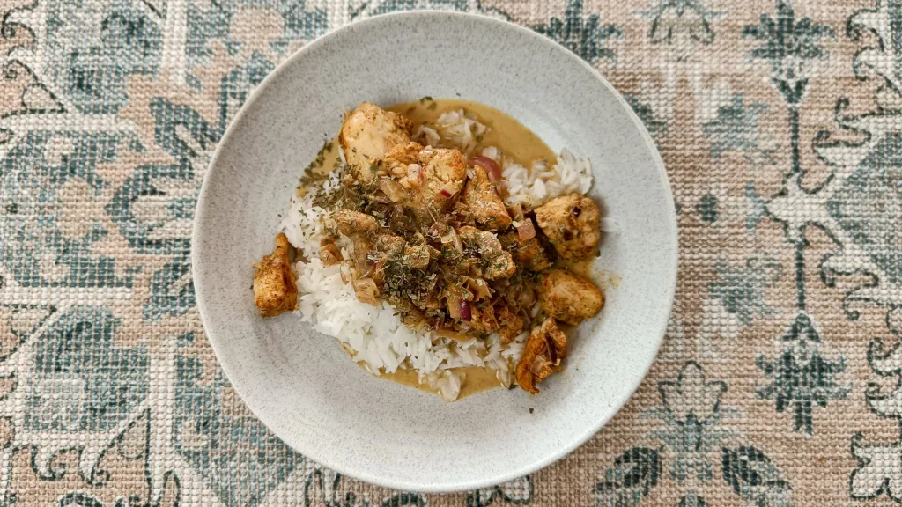
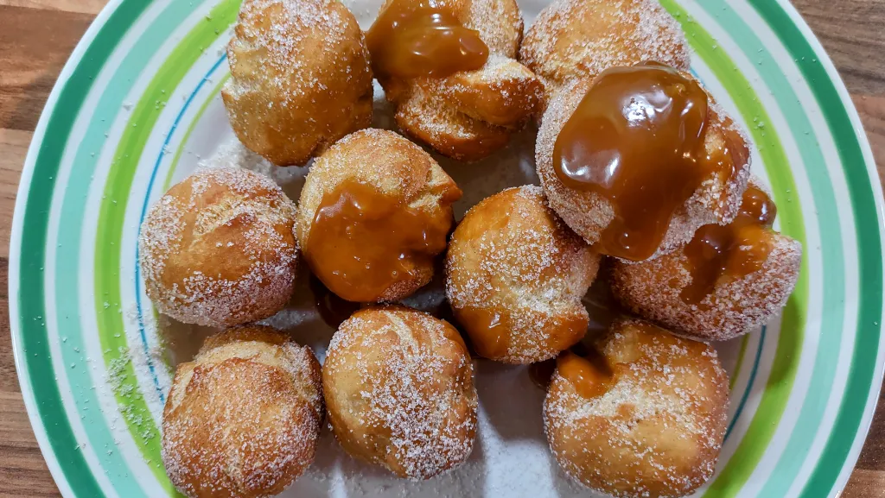

Top recipes
Harissa chicken noodle lettuce cups
25 mins
Serves 4-6

Pork, juniper & pink peppercorn meatballs with leeks & puy lentils
40 mins
Serves 2-3

Italian chop pasta salad
30 mins
Serves 8

Roast vegetable bastilla
1 hr 45 mins
Serves 6

Coconut & ginger chicken
20 mins
Serves 4

Pork agrodolce
2 hr 42 mins
Serves 4

Sweet potato kale salad with creamy honey mustard dressing
1 hr
Serves 6

Zanzibari curry with date chutney
1 hr 30 mins
Serves 4
Smoky rice with black beans, feta, corn & salsa
55 mins
Serves 4
Basil-parmesan chicken and rice with tomatoes
55 mins
Serves 4
Crispy cajun cauli tacos and slaw
30 mins
Serves 2
Hot italian stromboli
40 mins
Serves 2
Harissa baked cod with giant couscous, black chickpeas, carrots, coriander & lemon
1 hr
Serves 4

Mango and coriander salmon
30 mins
Serves 4

Honey-mustard chicken tenders
45 mins
Serves 4

Vegan pasta salad
40 mins
Serves 5
Creamy butter chicken
35 mins
Serves 6

Chicken musakhan
1 hr 5 mins
Serves 4

Sweet potato, orange and ginger soup
50 mins
Serves 4
General tso’s chicken
40 mins
Serves 4
Dorset apple cake
1 hr
Serves 8
Effortless doughnuts
25 mins
Serves 12

Sweet potato pastilla
1 hr 55 mins
Serves 6

Saffron ginger chicken with rice and naan bread
1 hr 15 mins
Serves 4

Sweet potato, bacon & orzo pasta salad
40 mins
Serves 4